Free Fly
Escala e merchandising
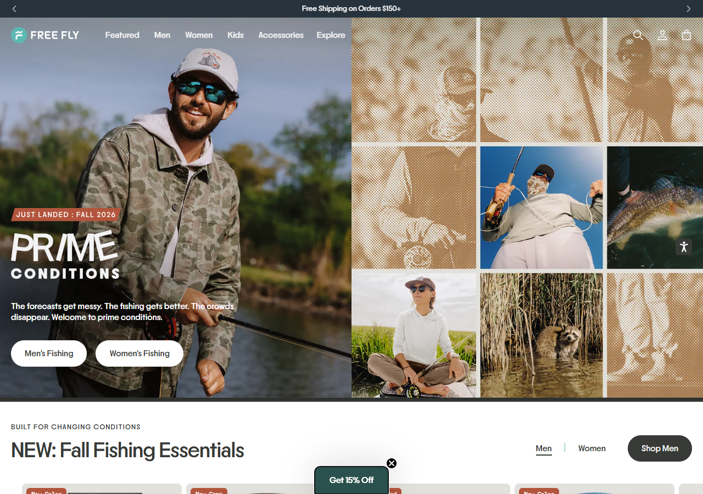
Modelar: ritmo editorial e entrada por ocasião. Evitar: complexidade e peso técnico.
Home e PDP comparadas na mesma classe de viewport. A nossa proposta combina clareza de oferta, identidade adulta, UX mobile e disciplina técnica.
Escala e merchandising

Identidade e prova visual
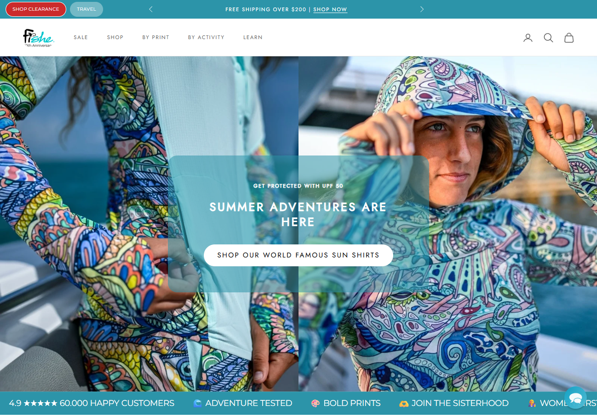
Fit e confiança
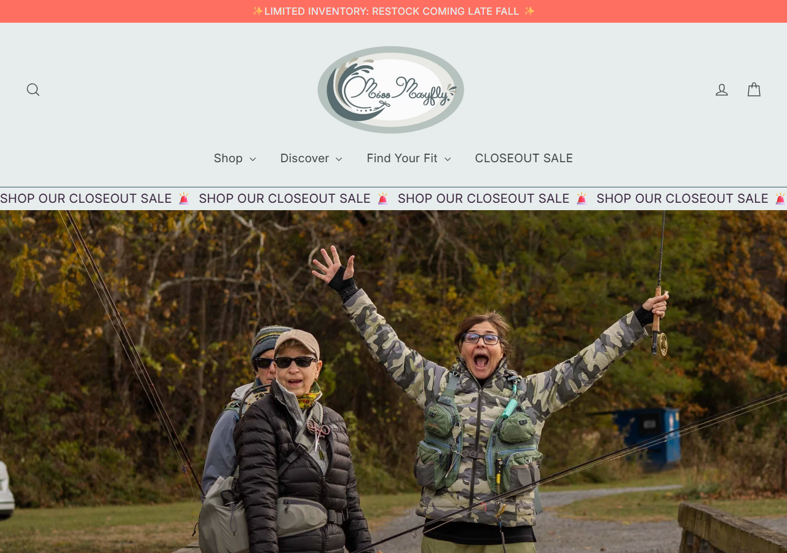
Lifestyle e simplicidade
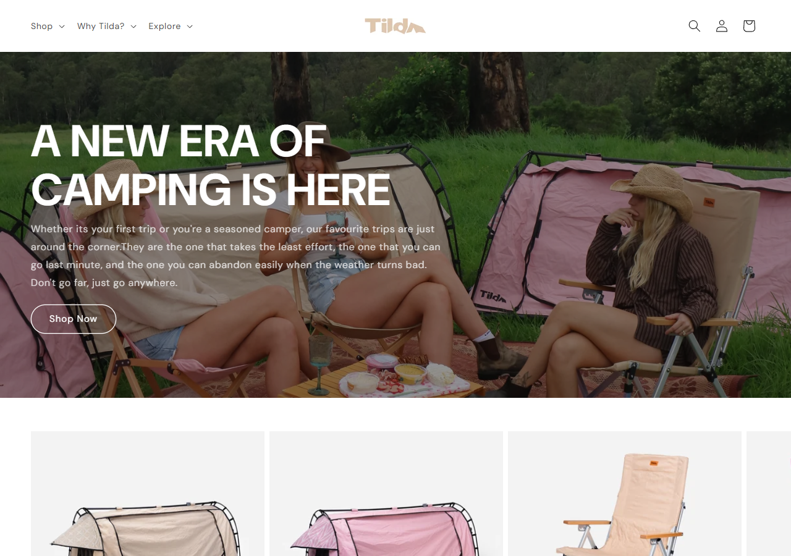
Oferta clara, kit e confiança
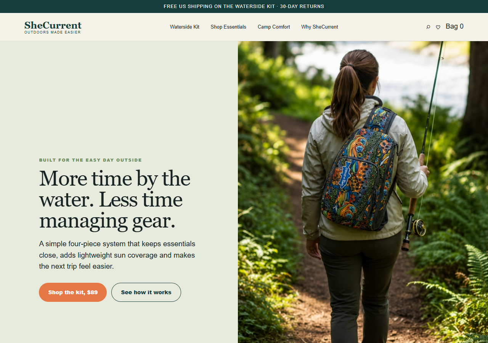
Campanha visual forte
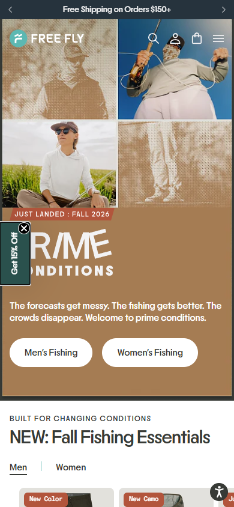
Promessa e CTA
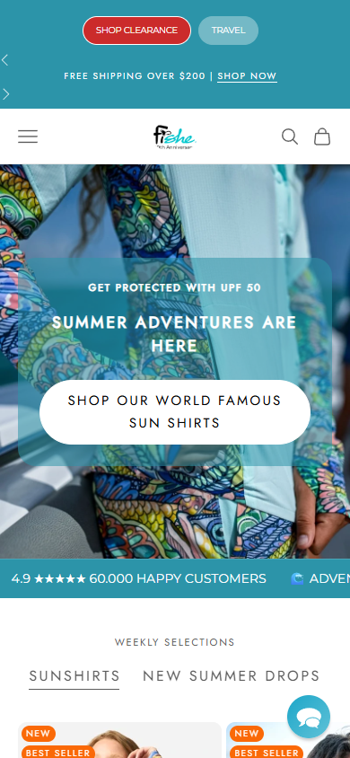
Posicionamento único
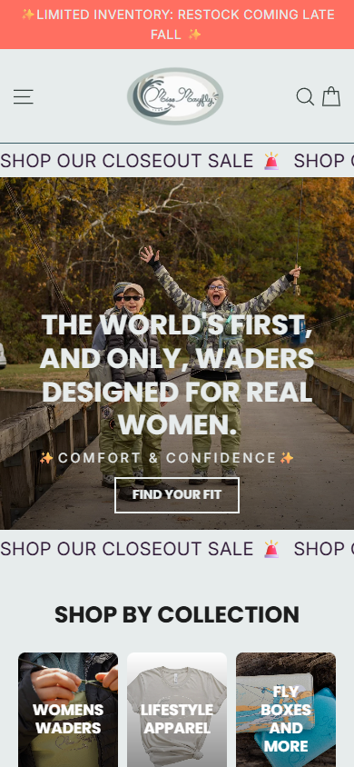
Editorial imersivo
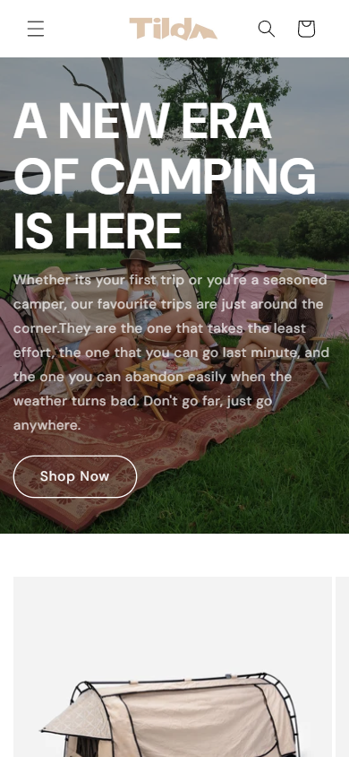
Mobile primeiro
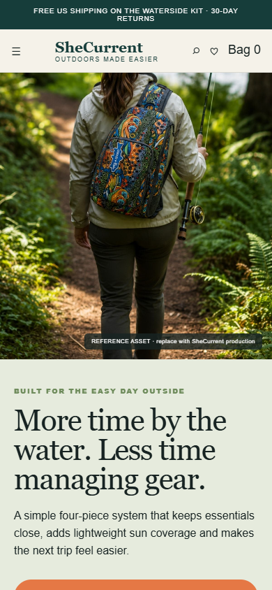
Galeria e prova
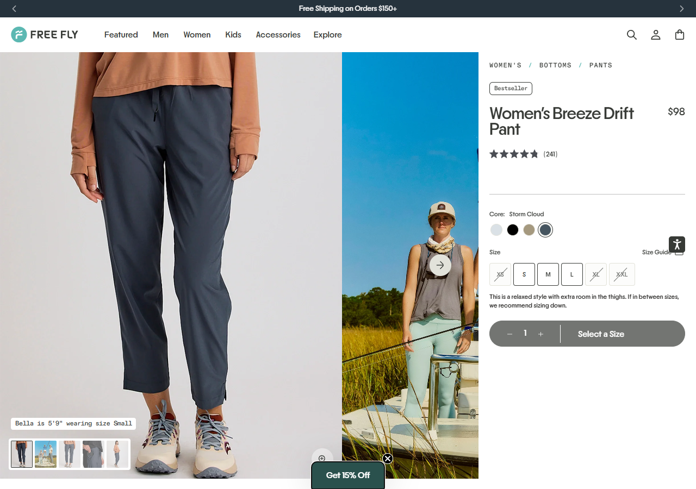
Oferta visual completa
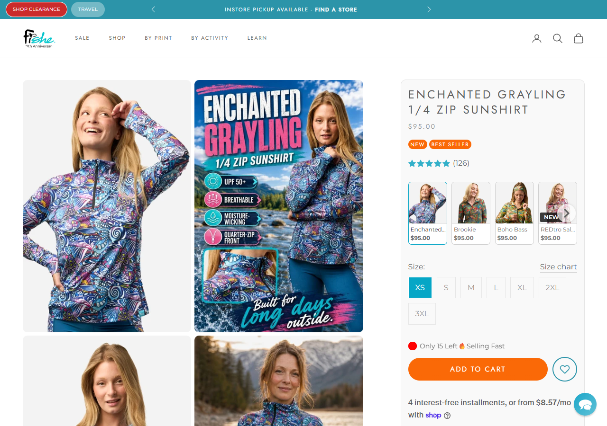
Fit e garantias
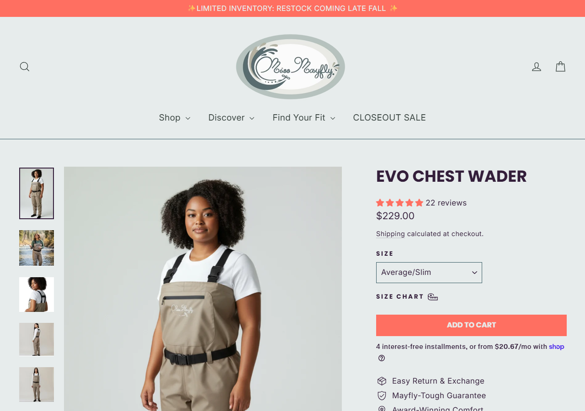
Simplicidade editorial
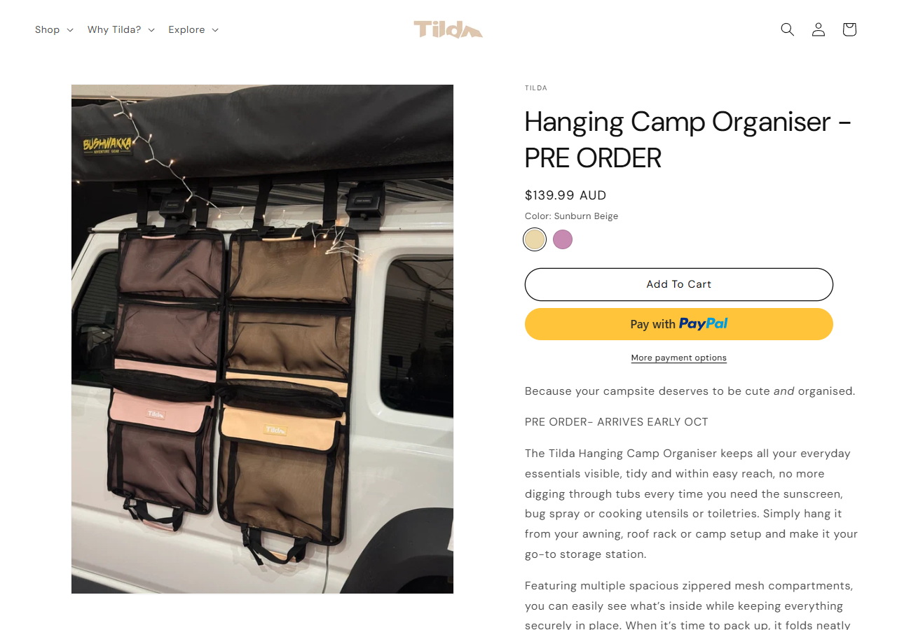
Produto + bundle
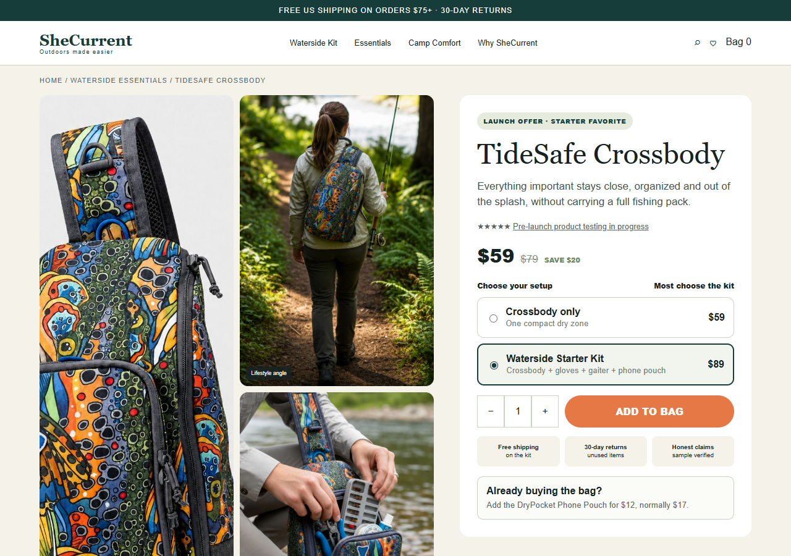
Imagem primeiro
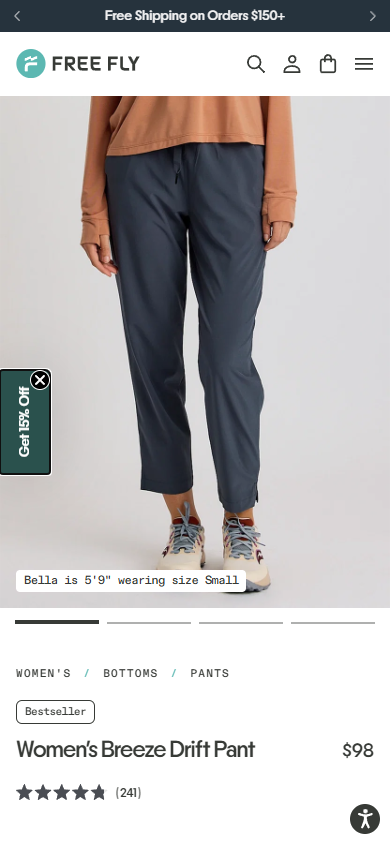
CTA persistente
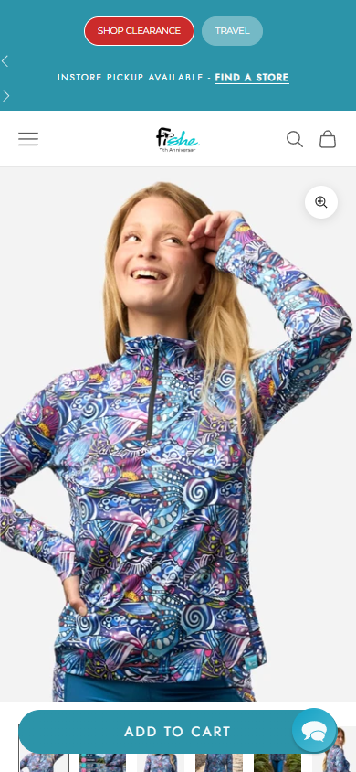
Galeria completa
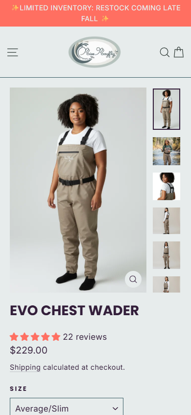
Fluxo limpo
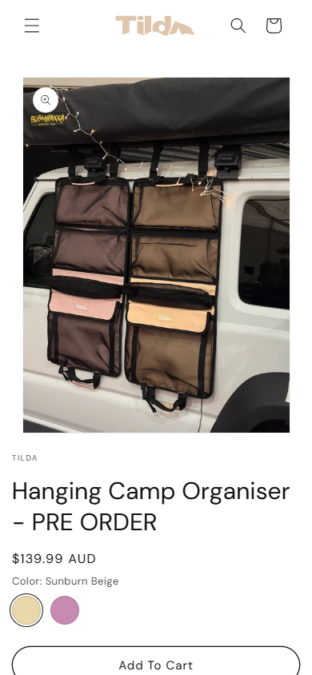
Oferta no fluxo
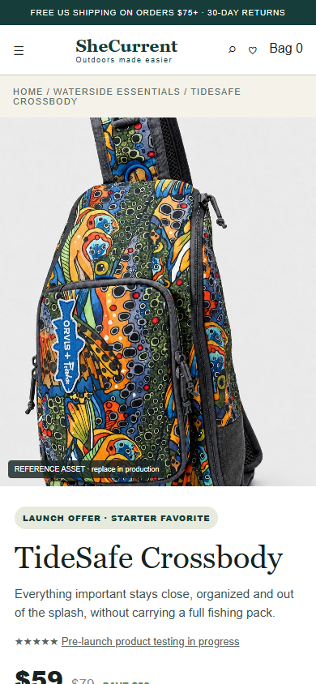
| Critério | Free Fly | FisheWear | Miss Mayfly | Tilda | Nossa direção |
|---|---|---|---|---|---|
| Design | editorial e escalável | colorido e proprietário | funcional, menos refinado | minimalista e lifestyle | editorial adulto com utilidade visível |
| Oferta | produto e variações | benefícios, prova e urgência | fit, garantia e especialização | produto e descrição | herói + kit + economia + bump |
| UX mobile | boa, CTA tardio | forte, elementos sobrepostos | produto claro, CTA tardio | limpa, pouca prova | CTA em fluxo, sem cobertura |
| Confiança | reviews e escala | 60 mil clientes alegados | garantia, retorno e fit | marca e lifestyle | limites honestos, política e amostra |
| Risco | complexidade técnica | pressão promocional | popup e hierarquia | persuasão insuficiente | falta validar produto e reviews reais |
| Loja | Página | DCL | Load | Recursos | Transferência | Scripts DOM |
|---|---|---|---|---|---|---|
| Free Fly | home | 1.564 ms | 3.092 ms | 481 | 3,36 MB | 243 |
| Free Fly | PDP | 1.427 ms | 3.033 ms | 442 | 3,13 MB | 227 |
| FisheWear | home | 1.374 ms | 3.054 ms | 457 | 3,32 MB | 155 |
| FisheWear | PDP | 1.878 ms | 3.969 ms | 463 | 3,40 MB | 182 |
| Miss Mayfly | home | 770 ms | 1.792 ms | 232 | 2,54 MB | 84 |
| Miss Mayfly | PDP | 899 ms | 1.902 ms | 314 | 3,25 MB | 92 |
| Tilda | home | 1.373 ms | 2.241 ms | 225 | 1,65 MB | 89 |
| Tilda | PDP | 1.018 ms | 3.167 ms | 226 | 1,67 MB | 94 |
Snapshot de laboratório em Chrome headless, celular 390 x 844, sem throttling de rede. DCL, load e transferência são evidência diagnóstica desta coleta, não Core Web Vitals de campo.
| Produto | Carrossel | Baixadas | Aprovadas | Únicas |
|---|---|---|---|---|
| TideSafe Crossbody | 6 | 6 | 6 | 6 |
| SolShield Gloves | 10 | 10 | 10 | 7 |
| CoolCurrent Gaiter | 6 | 6 | 6 | 6 |
| DryPocket Pouch | 4 | 4 | 4 | 4 |
| CampNest Organizer | 6 | 6 | 6 | 6 |
Aprovar amostra física, medidas, material, fechos, alça, resistência e limites de água. Trocar todas as referências concorrentes por imagens próprias.
Rodar Lighthouse e WebPageTest na loja publicada, testar Pixel e CAPI, medir add-to-cart, checkout e compra, e revisar gravações de sessão.